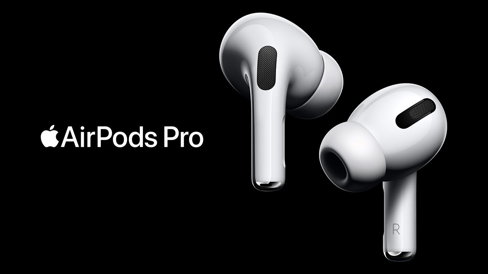
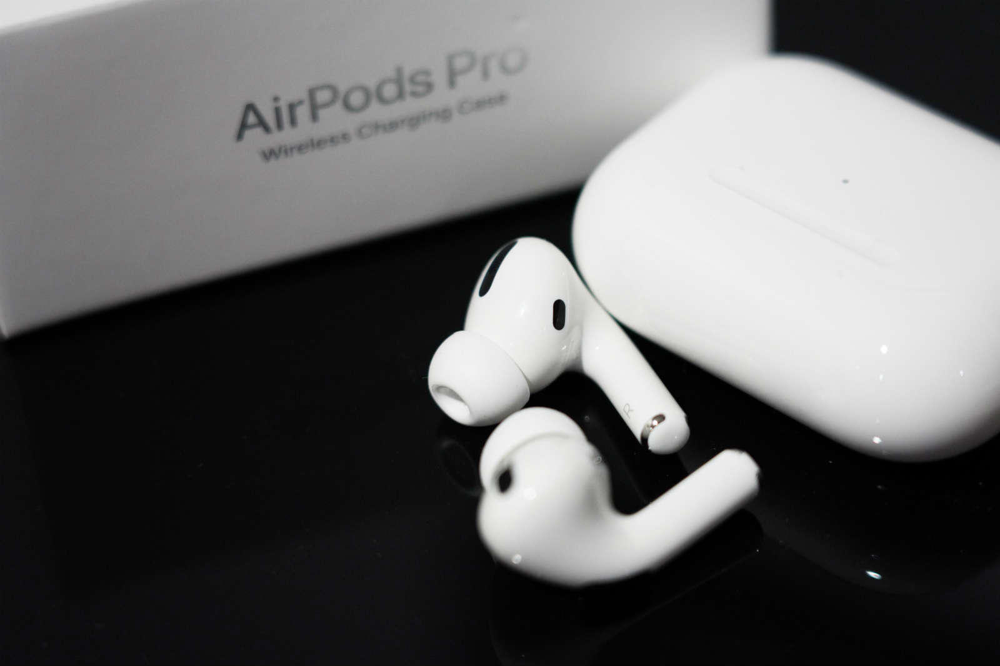
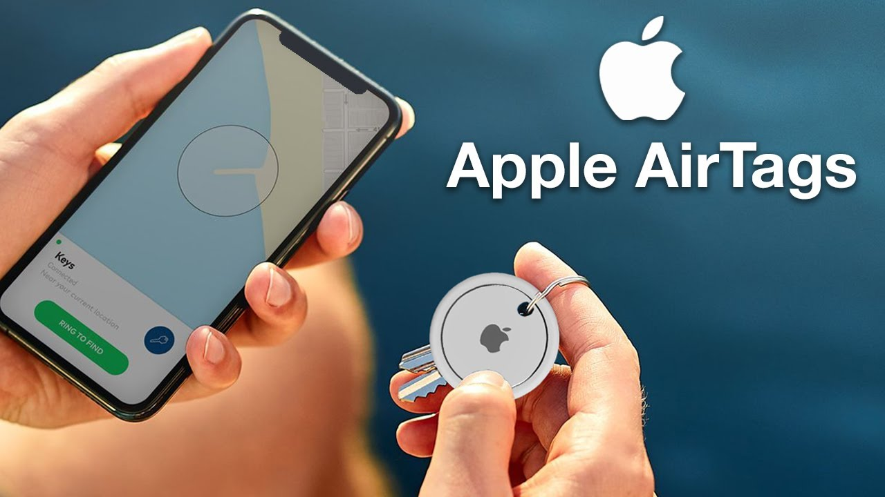

Shop now at the Apple Store online with many great ways to buy. Get free, no-contact delivery, Specialist help and more
Apple AirPods Max

Audio Technology
Apple-designed dynamic driver
Active Noise Cancellation
Transparency mode
Adaptive EQ
Spatial audio with dynamic head tracking1
Sensors
Optical sensor (each ear cup)
Position sensor (each ear cup)
Case-detect sensor (each ear cup)
Accelerometer (each ear cup)
Gyroscope (left ear cup)
Microphones
Nine microphones total:
Eight microphones for Active Noise Cancellation
Three microphones for voice pickup (two shared with Active Noise Cancellation and one additional microphone)
Chip
Apple H1 headphone chip (each ear cup)
Controls
Digital Crown
Turn for volume control
Press once to play, pause or answer a phone call
Press twice to skip forward
Press three times to skip back
Press and hold for Siri
Noise control button
Press to switch between Active Noise Cancellation and Transparency mode
Size and Weight2
AirPods Max, including cushions
168.6 mm (6.64 inches) 83.4 mm (3.28 inches)187.3 mm (7.37 inches)
Weight: 384.8 gram (13.6 ounces)
Smart Case
Weight: 134.5 grams (4.74 ounces)
Battery
AirPods Max
Up to 20 hours of listening time on a single charge with Active Noise Cancellation or Transparency mode enabled3
Up to 20 hours of movie playback on a single charge with spatial audio on4
Up to 20 hours of talk time on a single charge5
5 minutes of charge time provides around 1.5 hours of listening time6
AirPods Max with Smart Case
Storage in the Smart Case preserves battery charge in ultra-low-power state
Charging via Lightning connector
Connectivity
Bluetooth 5.0
In the Box
AirPods Max
Smart Case
Lightning to USB-C Cable
Documentation
Accessibility7
Accessibility features help people with disabilities get the most out of their new AirPods Max.
Features include:
Live Listen audio
Headphone levels
Headphone Accommodations
System Requirements8
iPhone and iPod touch models with the latest version of iOS
iPad models with the latest version of iPadOS
Apple Watch models with the latest version of watchOS
Mac models with the latest version of macOS
Apple TV models with the latest version of tvOS
Apple AirPods Pro
Audio Technology
Active Noise Cancellation
Transparency mode
Adaptive Equaliser
Vent system for pressure equalisation
Custom high-excursion Apple driver
Custom high dynamic range amplifier
Spatial audio with dynamic head tracking1
Sensors
Dual beam-forming microphones
Inward-facing microphone
Dual optical sensors
Motion-detecting accelerometer
Speech-detecting accelerometer
Force sensor
Chip
H1-based System in Package
Controls
Press once to play, pause or answer a phone call
Press twice to skip forward
Press three times to skip back
Press and hold to switch between Active Noise Cancellation and Transparency mode
Say “Hey Siri” to do things like play a song, make a call or get directions
Sweat and Water Resistant2
Sweat and water resistant (IPX4)
Size and Weight (Each)3
21.8 mm (0.86 inches)
30.9 mm
(1.22 inches)
Height: 30.9 mm (1.22 inches)
Width: 21.8 mm (0.86 inches)
Depth: 24.0 mm (0.94 inches)
Weight: 5.4 grams (0.19 ounces)
60.6 mm (2.39 inches)
45.2 mm
(1.78 inches)
21.7 mm (0.85 inches)
Height: 45.2 mm (1.78 inches)
Width: 60.6 mm (2.39 inches)
Depth: 21.7 mm (0.85 inches)
Weight: 45.6 grams (1.61 ounces)
Charging Case
Works with Qi-certified chargers or the Lightning connector
Battery
AirPods Pro
Up to 4.5 hours of listening time with a single charge (up to 5 hours with Active Noise Cancellation and Transparency mode off)4
Up to 3.5 hours of talk time with a single charge5
AirPods Pro with Wireless Charging Case
More than 24 hours of listening time6
More than 18 hours of talk time7
5 minutes in the case provides around 1 hour of listening time8 or around 1 hour of talk time9
Connectivity
Bluetooth 5.0
In the Box
AirPods Pro
Wireless Charging Case
Silicone ear tips (three sizes)
Lightning to USB-C Cable
Documentation
Accessibility
Accessibility features help people with disabilities get the most out of their new AirPods Pro. Features include:
Live Listen audio10
System Requirements11
iPhone and iPod touch models with the latest version of iOS
iPad models with the latest version of iPadOS
Apple Watch models with the latest version of watchOS
Mac models with the latest version of macOS
Apple TV models with the latest version of tvOS

Apple AirTags
The AirTag features a small circular design with a white finish on the front and a stainless steel back. You can also personalize your AirTag with emojis, numbers, and letters.
Apple touts that AirTags have a “lightweight design,” and there are two key factors to this: water resistance and a user-replaceable battery. Apple says AirTags are rated for IP67 water and dust resistance, while the battery inside is a CR2032, which is a standard coin cell battery.
Ordering AirTags
Apple also says that AirTag offers “over a year’s worth of battery life with everyday use,” and features a removable cover for when the time comes to replace the battery.
AirTag is splash-, water-, and dust-resistant and was tested under controlled laboratory conditions with a rating of IP67 under IEC standard 60529 (maximum depth of 1 meter up to 30 minutes). Splash, water, and dust resistance are not permanent conditions and resistance might decrease as a result of normal wear.
Integration with iOS
The true selling point of Apple AirTags is its integration with iOS. It is believed that you will be able to access your item trackers via the “Find My” device on your iPhone, iPad, or Mac. Once the item trackers are available, there will be a new “Items” tab in the Find My application for all of the things you choose to track.
The item tracker itself will be paired to a user’s iCloud account by proximity to an iPhone, much like AirPods. There is a limit of 16 AirTags per Apple ID, according to Apple.
Furthermore, you’ll be able to put Apple’s item tracker in “Lost Mode” – which means the tag will store your contact information, allowing other iPhone and Android users to read that information. In such instances, you’ll receive a notification when your item has been found. Ultimately, what this means is that you’ll be able to attach AirTag to any device – such as your wallet, keys, backpack, and more – and track that item via the Find My app on your iOS device and Mac. Ultra Wideband Each AirTag incorporates a U1 chip, which Apple says enables unique precision tracking features for users with the iPhone 11 and iPhone 12. The U1 chip can be used to more accurately determine the distance and direction to a lost AirTag when it is in range, using what Apple calls “Precision Tracking.” Each AirTag is equipped with the Apple-designed U1 chip using Ultra Wideband technology, enabling Precision Finding for iPhone 11 and iPhone 12 users. This advanced technology can more accurately determine the distance and direction to a lost AirTag when it is in range. As a user moves, Precision Finding fuses input from the camera, ARKit, accelerometer, and gyroscope, and then will guide them to AirTag using a combination of sound, haptics, and visual feedback. Privacy